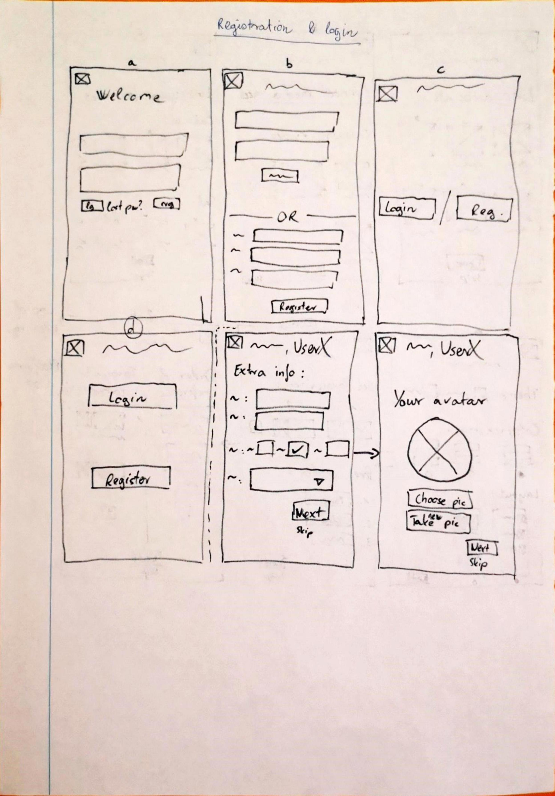
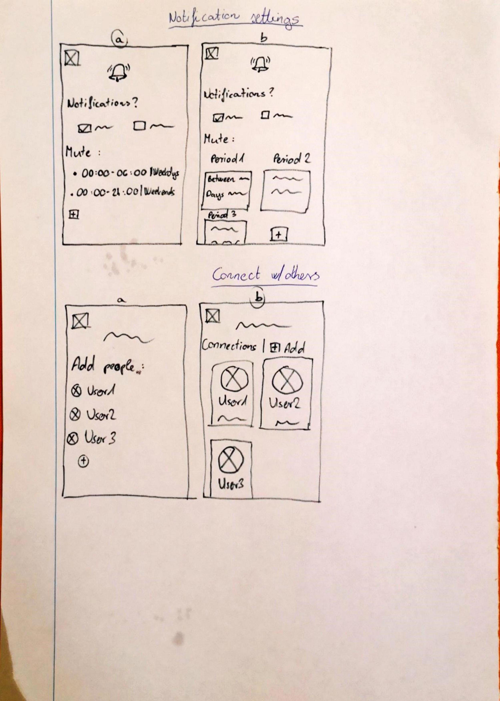
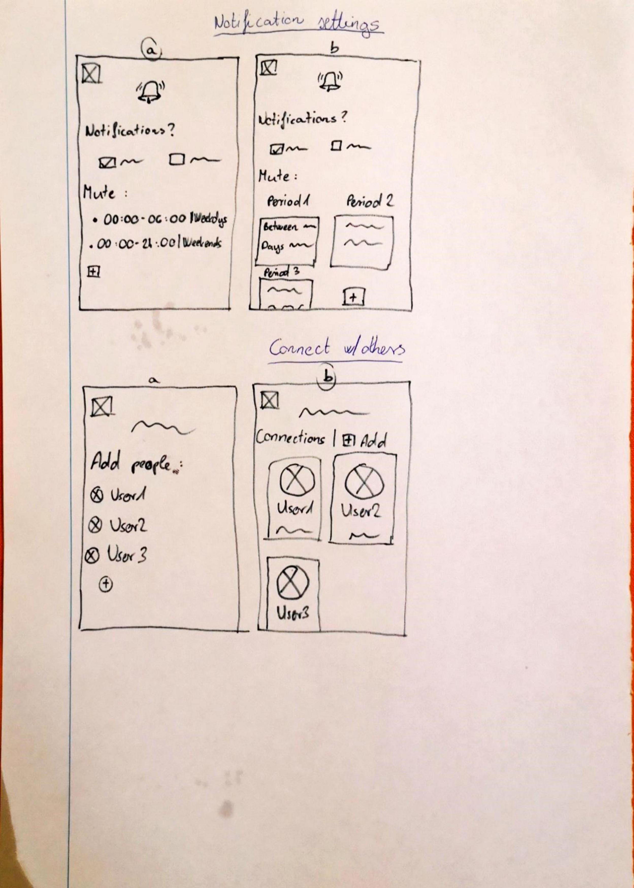

The problem:
Let's say we want to spend some free time on the computer. We want to watch a movie/series episode, a couple videos or maybe some livestreams, but we don't know what exactly we want to see. We have to check every app/site we like to spend time on to see what's new, what's happening. This is time-consuming. It would be great to have all of the new content shown in one place where we can quickly check everything and decide, then go to the desired application or website.
The idea:
We want to design an app that lists wha a user can do in their free time, if they want to spend it watching something online.
Possible drawbacks:
We need to connect different accounts with his app. This means that we have to contact other companies and ask for permission. Also, accessing user data through API's is going to be a very difficult development task.
Who is the app aimed at?
People, who spend a lot of free time on the internet. Users, who consume mainly digital content in the form of livestreams, videos, series, movies and video games. People, who are registered on multiple sites that provide the aforementioned content and thus need to see what is happening on those platforms.
User personas:
Persona #1:
Name: Bill
Age: 16
Occupation: Student
What he likes:
Clear, obvious instructions
Pragmatism
Fairness
What he doesn't like:
Wasting time
Being misled
Inaccuracy
Bill comes from a middle-class family. Father is a lawyer, mother is a teacher. He is currently in middle school, focusing on maths and physics. Has a game console, which he uses to play games and watch streams, and a laptop to message friends & family and do homework. Bill has around 3-4 hours of free time a day and he typically uses it to play video games and watch videos. He has an affinity for technology. During school breaks, he has a lot of free time on his hands.
Persona #2:
Name: Martha
Age: 39
Occupation: Animator
What she likes:
Precision
Clarity
(Trying out) new things
What she doesn't like:
Beating around the bush
When something doesn't work
Martha is a senior animator and has been working as one for 15 years. She loves it and is not planning on changing careers. She is very serious when it comes to work, very conscious about attention to detail, but in her private life, she is very relaxed and easy-going. When it comes to her day, she likes to have it defined – there’s a time for work, training, and private life. In her free time, she wants to have fun and relax – nothing serious. She is very straightforward as well.
Persona #3:
Name: Samantha
Age: 24
Occupation: Secretary trainee
What she likes:
Simplicity
Guidance
What she doesn't like:
Assumptions
Being overwhelmed
Being pressured into something

Samantha is not a tech-savvy person. She deals with what she has to at work and then at home, she watches the occasional video about various topics, like cooking or lifestyle. Even though, as a secretary, she has to work with timetables, she is all over the place herself. Sometimes she forgets something at home. Sometimes she is oblivious of what she wanted to do.
Main requirements & features
In order to be able to start working on the design of the app, I needed to know what features the product was going to have, so it was time to outline them.
User creation and login
Accoung linking
Filtering - eg. livestreams only, series & movies only, etc.
Notification management; reminders
"Open in..." / "Go to ... app"
Parental control/guidance
Basic messaging/connect/planner feature that allows the user to do something with another user (eg. new episode of a series -> plan with user B -> “8pm tomorrow?”)
Personalization
Sync with calendar app(s)
I also felt like we should include a first time setup - or onboarding screen(s) - for new users. So, it was time to create a user journey chart for that.
User journey - Onboarding

Wireframes
Now that we have defined what the app should be, created personas and outlined the main features and the user journey for the onboarding part, we can start designing how the app should look. I started with low-fidelity designs: wireframes on paper. I started playing around with ideas: looks, layouts, etc. I sketched these ideas on paper and then asked some other people to vote on them. You can see the different ideas on the pictures below, and you can also see the ones that got the most votes: their letters are circled.
 

High-fidelity design
Now that the general direction of the design of the product has been outlined, it was time to move on to the next phase: high-fidelity designs and prototyping. For this, I'd decided to use Figma. Over the next couple of days I started designing the app. First, the onboarding part and every screen of it. Then came the main main part(s) of the application: the main screen and its details. And lastly, the user's profile and settings. The reason I'd decided to go in this order was that this way, I felt I was more able to put myself in the position of the end user: design their journey and think of basics that are needed and nice to have's that are welcomed. During this intensive design period, when I felt like I was done with parts of the product (after the onboarding, the main screen & features and the user profile respectively) I conducted multiple usability tests. I shared my Figma prototype with a group of people and asked them to try to use it. I told them that it was a prototype that didn't contain any code so it won't be taking into account any choices they make (eg. choosing a theme), but other than that, they should treat as if it was a near-ready product.
Some tests were one-on-one interviews where I could get more detailed feedback and some were group sessions where I let the members bounce ideas off of each other. Based on the feedbacks I got, the designs were adjusted multiple times. Here, you can see some that didn't make it:


During this time, some features were cancelled as well, like the connections and planning features, that would've allowed users to add other users and plan watching something with them. The product's visual customization by the user was also toned back, in order to keep the signature color scheme and general feel of the app.
Content Hub
Here, you can find the latest prototype. Feel free to play around with it!